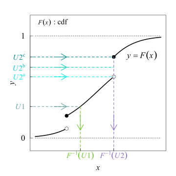

Monte Carlo Markov Chain
1. Motivation
Statistical inference consists in learning about what we do not observe based on what we observe.
1.1. Monte Carlo Method
In its general form, Monte Carlo estimates the following expectation:
The only tricky issue is that the randomness involved is the pseudo-randomness of computer simulation, rather than randomness of real-world phenomena. Thus it is a good idea to use terminology that emphasizes the difference.
1.2. Bayesian Inference
Bayes rule:
The problem here is the integral in denominator, we can choose prior and likelihood distribution such that they are both conjugate. With conjugate distributions, we can come up with marginal likelihood distribution in closed form and consequently, the posterior can be computed. However, in most cases, the model is too complicated ⇒ intractable to compute the marginal likelihood in high dimensions ⇒ approximating with Monte Carlo and
:
After approximating the posterior distribution of parameters
We can predict the probability of observing a new sample by marginalizing over
:
This distribution can be known as marginal posterior distribution.
In cases such as when the model is simple and conjugate priors are being used the posterior and the above integral can be solved analytically.
Therefore, we can use Monte Carlo Method to approximate above probability by taking samples from posterior distribution which is:
1.3. Markov Chains
A sequence of random elements of some set is a Markov chain if the conditional distribution of
given
depends on
only. The set in which the
take values is called the state space of the Markov chain. A Markov chain has stationary transition probabilities if the conditional distribution of
given
does not depend on
. This is the main kind of Markov chain of interest in MCMC. Some kinds of adaptive MCMC have non-stationary transition probabilities.
The joint distribution of a Markov chain is determined by:
- The marginal distribution of
, called the initial distribution
- The conditional distribution
called the transition probability distribution
If we define which is our state space and
is discrete state space + cardinality of
then we can totally define transition probability distribution as stochastic transition matrix as follow
Realize that and
for all row
.
The Markov chain might have a stationary distribution :
Thanks to Perron-Frobenius theorem which is stated as follow:
Let be a real matrix, with all its elements positive
> 0. Then the top eigenvalue
is unique and real (all other eigenvalues have a smaller real part). The corresponding top eigenvector
has all its elements positive:
then the top eigenvalue satisfies the following inequalities:**
The transition matrix has eigen-value of 1 which can help us to find stationary probability distribution of Markov states . Specifically, If
is a stochastic matrix of the Markov chain, we must have
which makes
. Then let’s
which is our stationary distribution:
or with
In order to generalize the definition transition operator we denotes:
In MCMC, the Markov chain is usually a homogeneous Markov Chain which has transition functions are the same for all
If we use the transition operator, the definition of stationary (invariant) distribution becomes:
1.4. Properties of Markov Chains
To engineer a Markov chain we need some useful asymptotic properties of Markov chain
Definition of irreducible Markov chain:
We say that a Markov chain is irreducible if, for each and
, there exists a
(possibly depends on
and
) such that:
verbally, a chain is irreducible if it is possible to eventually get from any state to any other state
in finite number of steps.
Definition of aperiodic Markov chain:
An irreducible Markov chain is called aperiodic if its period is equal to 1, or equivalently
Theorem: All states of an irreducible MC are of the same type with regard to persistence (recurrence) and periodicity [5]
Theorem: Irreducible Markov chain has at least one non-null persistent Markov chain has a (unique) stationary distribution
[7,8,9]
Theorem: A finite (at least one state is non-null persistent [9]), irreducible Markov chain has a unique stationary distribution [4]
Theorem: A finite, irreducible, aperiodic Markov chain has limiting distribution equals unique stationary distribution [6]
Theorem: A non-null persistent, irreducible, aperiodic Markov chain has limiting distribution equals unique stationary distribution
2. How To Sampling?
Since the only problem here is how to do sampling or
. There are some standard methods and other intelligent, efficient methods.
2.1. Inverse Transform the Uniform Sampling
Inverse transform sampling is straightforward method of generating random samples from any distribution by using its inverse cumulative distribution function (ICDF) . Easy to note that

Source: https://en.wikipedia.org/wiki/Inverse_transform_sampling
By sampling uniform distributed random variable as a value of cumulative distribution function and inverse back that value, we can get the desired sample
. Here is the proof that inverse uniform random variable will have the same CDF with desired distribution. Let’s
,
and
The intuition behind Inverse Transform Sampling is simple: re-scale the a uniform random variable to have probability that we want.
2.2. Acceptance-Rejection Sampling
Rejection sampling used a proxy proposal distribution with density function of
to generate samples
and with an acceptance-rejection criterion to filter out unwanted sample to get new sample with distribution as our desired distribution
with density function of
. This algorithms is described as follows:
- Sample an observation
from
and an uniform distributed sample
- Check whether
. If the it’s true than accept this sample as our sample for distribution
, else, reject it and return back to step 1.
The algorithm will take average iterations to get one sample for
Proof
We need to show that conditioned probability . Firstly we compute reverse conditional probability
Using Bayes theorem with the fact that
2.3. Markov Chain Monte Carlo
We need a Markov chain to have the following conditions:
- Having the desired sampling distribution as Markov chain’s stationary distribution
. The first condition can be solved by constraining the transition operator on a condition called as detailed balance condition
- With any starting point, we can achieve the stationary distribution and visit all possible states. This condition can be known as Ergodicity.
These conditions guarantee that realizations of a single Markov chain to approximate the integrals without sampling from actual distribution . These conditions are proved by the following fundamental theorem
Fundamental Theorem To Design with Known Invariant Distribution [1]
If a homogeneous Markov chain on a finite state space with transition operator has
as an invariant distribution and
then Markov chain is ergodic,
-
if
is a real-valued function from the state space of the Markov chain, then the expectation of
with respect
to the distributionwritten as
, converges to its expectation with respect to
, written
-
For all
, we got limiting distribution is our unique invariant distribution
The detailed balance condition is stated as follow: a transition operator satisfies the detailed balance condition if there exists a distribution
such that (and, unique
is our stationary distribution
)
Therefore, we only need to find the transition operator satisfies
Remember this is our sufficient condition to design desired distribution to be stationary distribution since if the Markov stationary distribution is not unique one and stationary distribution is not limiting distribution, then detailed balance condition can not be useful. Fortunately, the ergodicity implies homogeneous Markov chain has unique stationary distribution (irreducible) and it’s also our limiting distribution (aperiodic).
2.4. Metropolis-Hastings Algorithm
Let is our desired distribution to sample from. We wish to have
as our stationary distribution in MCMC. A proposal distribution will random walk point
to other point
with probability of
then Metropolis-Hastings algorithm will accept the new sample point if that point yields high unnormalized term
.
Metropolis-Hastings:
- Sample
from an arbitrary probability distribution
- for
do
- Propose a random walk
- Acceptance rate of new point
is
- Sample
- If
then assign new sample point by a random walk point
else remains the old point
- Propose a random walk
- Collect
points
to create a
of the distribution
We now replace with
for easy manipulation with general original point. Notes that with the term
, we do not necessarily compute exactly the density which is computationally intractable in the first place, therefore we replace it with unnormalized term without any difference due to the cancel between numerator and denumerator
.
We will prove that Metropolis-Hastings satisfies ergodicity conditions and detailed balance condition with desired probability is our stationary distribution. Firstly, the transition function of Metropolis-Hastings is
Since with the case of , there are two possible cases which are the proposal probability give new point equals exactly
with
and
. Meanwhile, the proposal distribution give new point that is different from the original one
but is rejected with probability of
. For
we have
For , we only need to prove
which is obvious.
This property of Metropolis-Hastings aligned with (3), a detailed balance condition. Using theorem (2) with stationary distribution , we have
due to the proposal density is always greater than and
with all sampling point
. Indeed, assume
is the first
such that
or
, then there’s a proposal point
is accepted with
meaning
can not be accepted.
3. References
[1] https://www.robots.ox.ac.uk/~fwood/teaching/C19_hilary_2015_2016/mcmc.pdf
[3] https://www.youtube.com/watch?v=ZjrJpkD3o1w
[4] http://faculty.washington.edu/harin/markovchain_proofs.pdf
[5] https://www.ece.iastate.edu/~namrata/EE527_Spring08/l4c.pdf
[6] https://www.probabilitycourse.com/chapter11/11_2_6_stationary_and_limiting_distributions.php
[7] http://www.columbia.edu/~ks20/stochastic-I/stochastic-I-MCII.pdf
[8] https://www.commit.tu-berlin.de/fileadmin/fg302/FSP-markov-chains-smaple.pdf
[9] https://bookdown.org/jkang37/stochastic-process-lecture-notes/lecture09.html)